High Fashion vs. Commercial Fashion Photography
by Angelli Nguyen
Introduction
Photography plays a crucial role in shaping the fashion industry, but not all fashion photography serves the same purpose. High fashion photography and commercial fashion photography differ significantly in their aesthetic, intent, and execution. While high fashion photography often embraces avant-garde, artistic expression, and conceptual storytelling, commercial fashion photography prioritizes accessibility, branding, and mass-market appeal. These two branches of photography influence consumer culture and shape the visual identity of brands across the fashion spectrum.
Definition & Purpose
High Fashion Photography
High fashion photography is an art-driven form of photography that showcases designer clothing, accessories, and concepts in an extravagant, imaginative, and often surreal manner. The goal is to push artistic boundaries, create a sense of exclusivity, and craft editorial images that evoke strong emotions or narratives. This type of photography is commonly seen in high-end fashion magazines such as Vogue, Harper’s Bazaar, and Elle.
Notable high fashion photographers include:
- Ruo Bing Li
- Greg Swales
- Calvin Pausania
- Melissa Cartagena
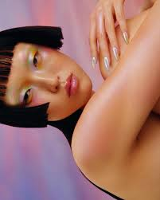
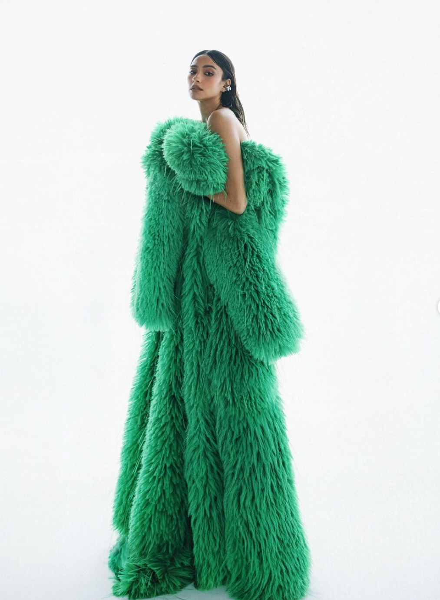
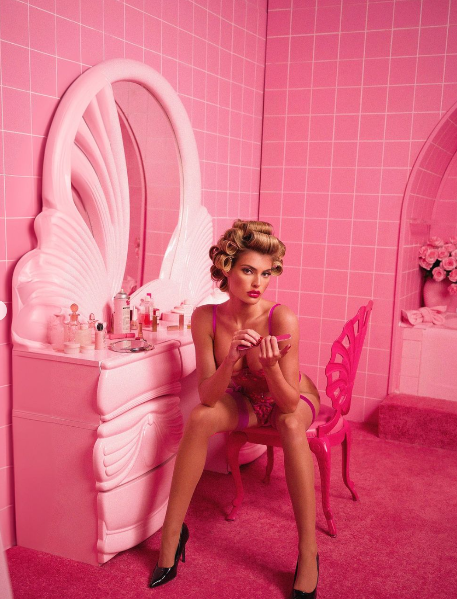
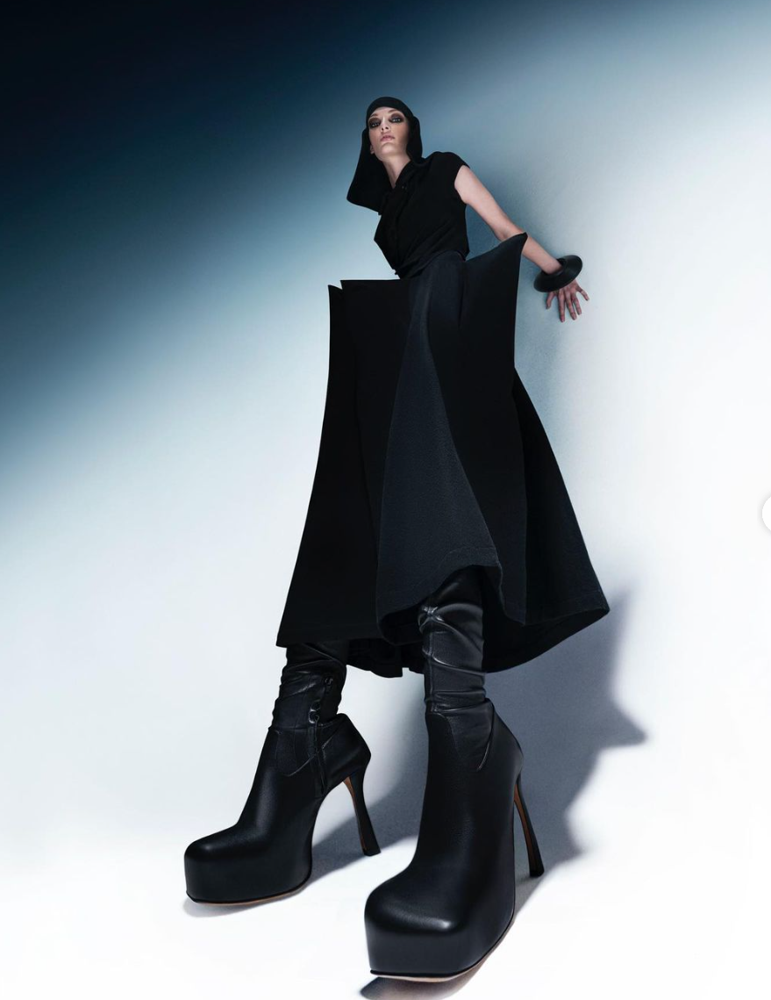
Commercial Fashion Photography
Commercial fashion photography, on the other hand, is focused on selling clothing and accessories in a way that appeals to a broad audience. The images are polished, clear, and engaging, designed to highlight the product rather than the artistic concept behind it. Commercial photography can be found in advertisements, e-commerce websites, and catalogs for brands like Target, H&M, and Nike.
Prominent commercial fashion photographers include:
- Lara Jade
- Beth Sternbaum
- Emilynn Rose
- Shan Benson
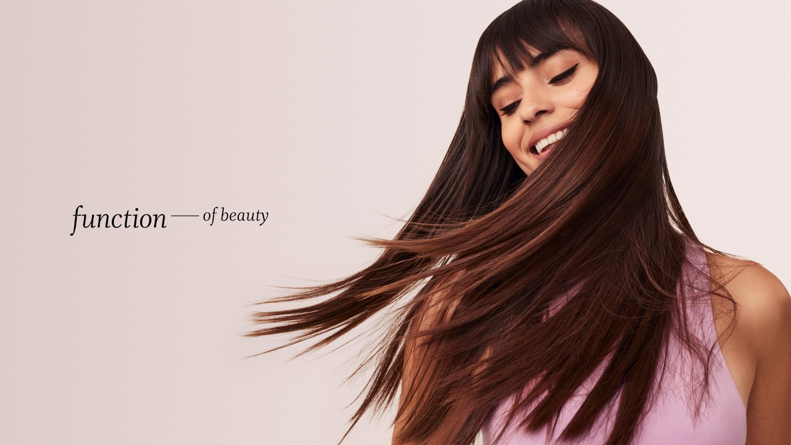
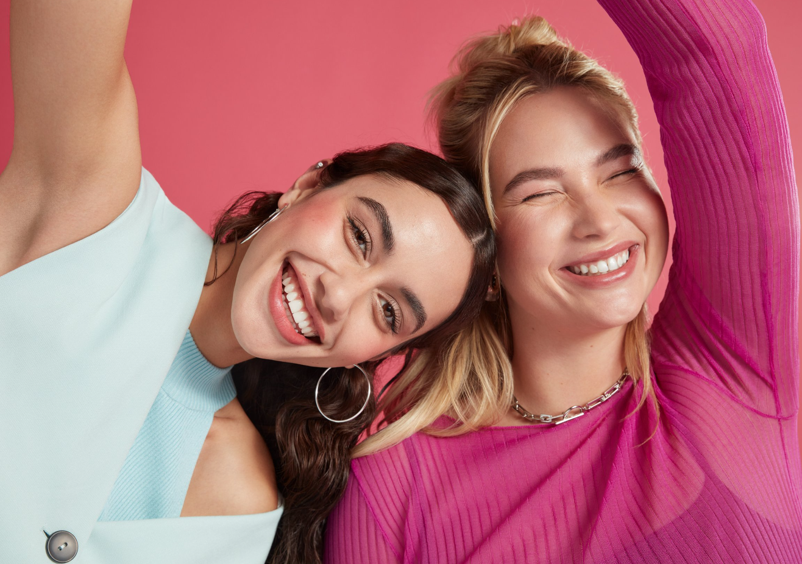
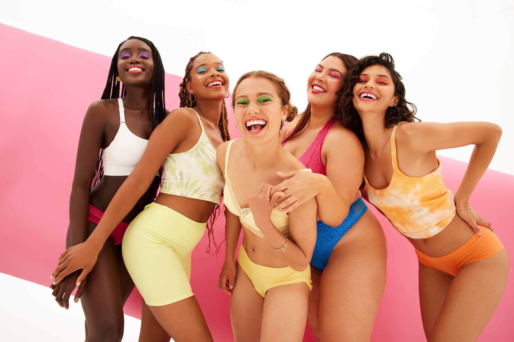

Aesthetic Differences
High Fashion Aesthetics
High fashion photography is known for its avant-garde approach, often exaggerating clothing and styling in unconventional ways. Bold makeup and dramatic hair choices add to the artistic expression, making the images feel more like conceptual art than simple fashion showcases. The compositions are experimental, featuring unusual angles, abstract poses, and surreal settings that prioritize storytelling over realism. Louis Vuitton’s December campaign collaboration with Takashi Murakami and Zendaya, for example, embeds the model in a vibrant and cartoonish scenescape in unconventional elongated poses
(Louis Vuitton X Murakami, 2024).
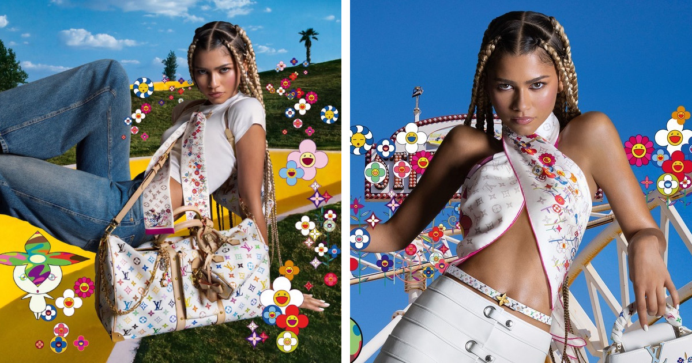
Commercial Aesthetics
Commercial fashion photography, on the other hand, focuses on clarity and accessibility. Clean, minimalist backgrounds keep attention on the clothing, while natural lighting aligns with traditional beauty standards. Models appear relaxed and relatable, often smiling or engaging naturally with the product. The goal is to make the clothing desirable and wearable rather than purely artistic. H&M’s advertising campaigns, for instance, use bright, neutral backgrounds and realistic styling to appeal to everyday shoppers
(H&M Holiday 2024 Kids, 2024).
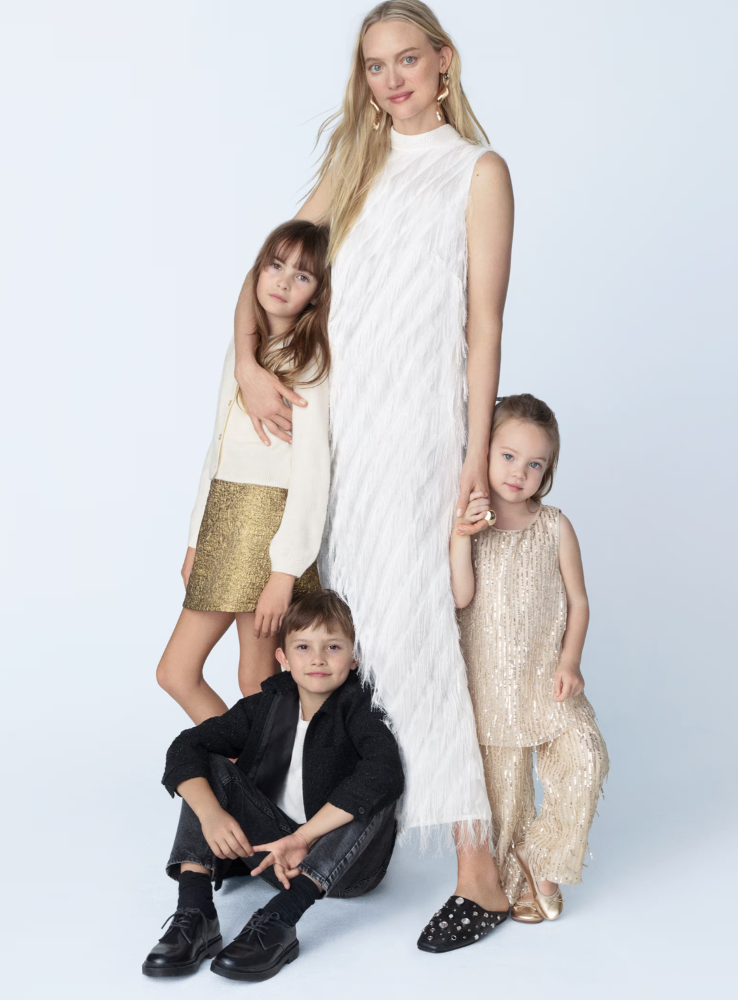
Lighting & Composition
High Fashion Lighting & Composition
High fashion photography embraces dramatic lighting techniques, often using high contrast, colored gels, or chiaroscuro effects to enhance mood. Unique camera angles—such as low perspectives, extreme close-ups, or distorted framing—help create striking, unconventional visuals. Many high-fashion photographers incorporate fine art influences, borrowing from painting, sculpture, and surrealism to craft editorial spreads. Nick Knight’s work for SHOWstudio, for example, frequently uses extreme lighting contrasts and abstract compositions to push creative boundaries
(Canon Europe).
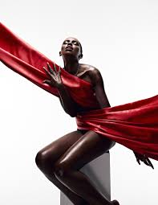
Commercial Lighting & Composition
In commercial fashion photography, lighting is typically soft and even, ensuring the clothing remains the focal point. Symmetrical, eye-level compositions create a balanced and approachable look, while close-up shots highlight fabric details and fit. The focus is on realism and clarity, making the product as appealing and true-to-life as possible. Victoria’s Secret campaigns, for example, use warm, flattering lighting to enhance the natural beauty of their models while keeping the product front and center
(Victoria’s Secret Bras, 2023).
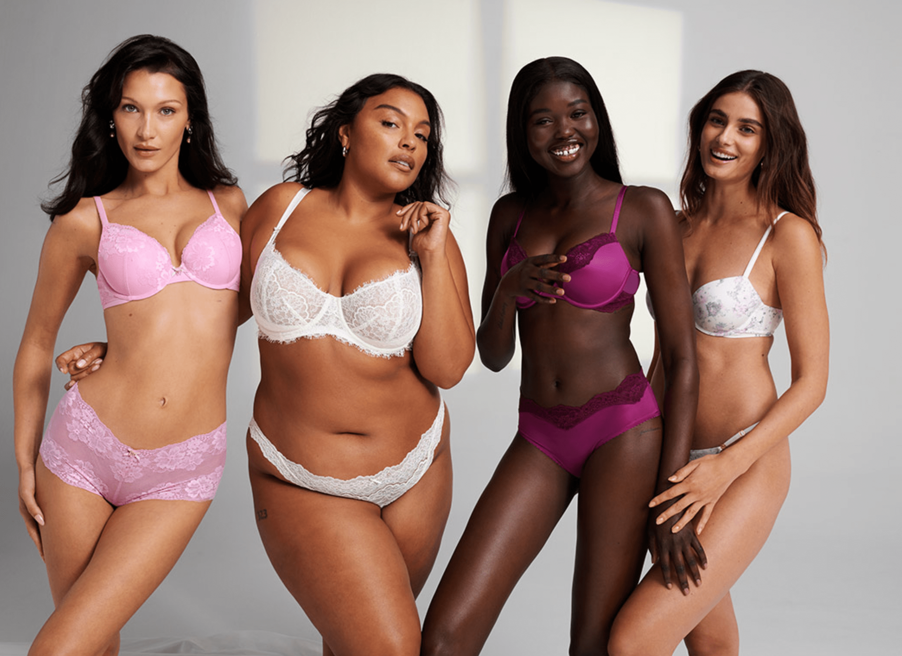
Model Casting
High Fashion Models
High fashion models are often chosen for their unconventional looks, featuring striking or asymmetrical features that align with the avant-garde nature of the imagery. Expressions tend to be serious, dramatic, or distant, reinforcing the artistic and conceptual nature of the shoot. Michael Kors' spring/summer 2024 runway, for example, frequently feature models with minimal expression, allowing the focus to remain on the clothing’s sculptural and avant-garde qualities
(Michael Kors Spring/Summer, 2024).
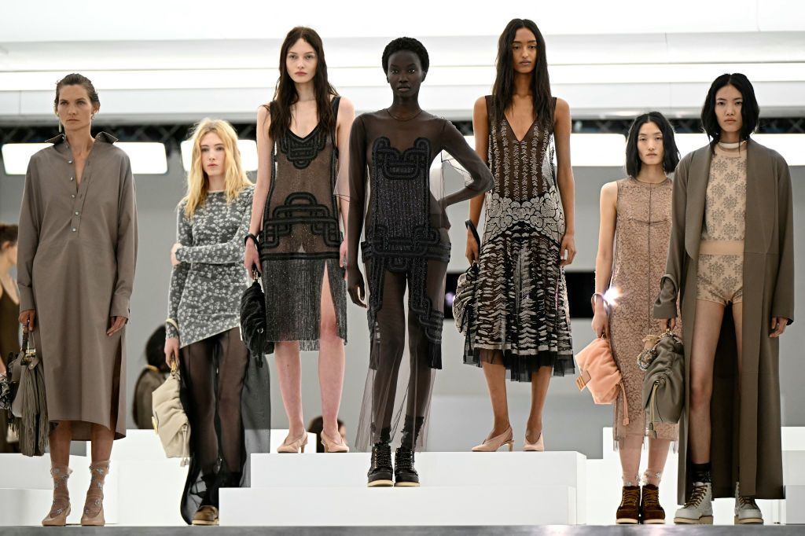
Commercial Models
Commercial fashion models typically fit within mainstream beauty standards and exude warmth and relatability. Expressions are friendly and inviting, often showcasing movement or interaction with the product. This approach makes the clothing feel more wearable and aspirational to a broad audience. Target's athleticwear campaigns, for instance, often feature models in action, emphasizing the brand’s energetic and performance-driven image
(New Year, New Us: Target’s Newest Brand Celebrates the Joy of Movement for ALL Families, 2020).
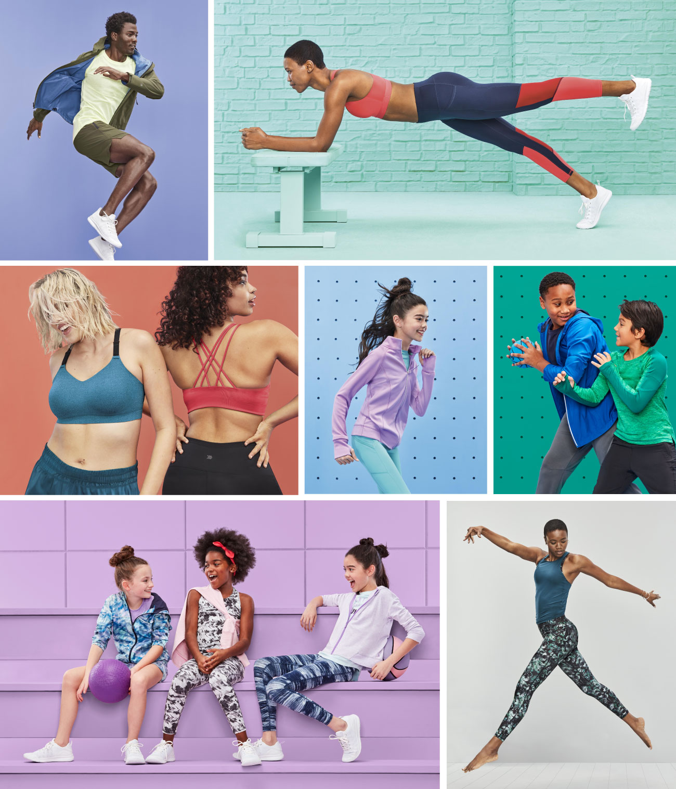
Post-Production & Retouching
High Fashion Post-Production
High fashion photography often involves heavy post-processing to enhance the artistic vision. Color grading can be dramatic, creating surreal, muted, neon, or desaturated tones to evoke a specific mood. Digital manipulation is frequently used to alter backgrounds, body proportions, or other elements to fit a conceptual theme.
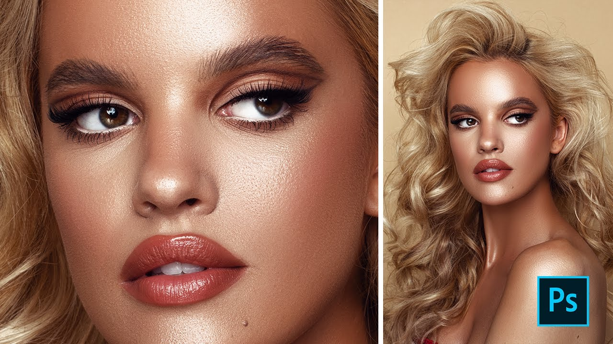
Commercial Post-Production
In commercial photography, post-production is minimal, primarily focusing on skin smoothing, color correction, and overall polish. The goal is to keep products looking realistic and appealing without distorting their actual appearance.
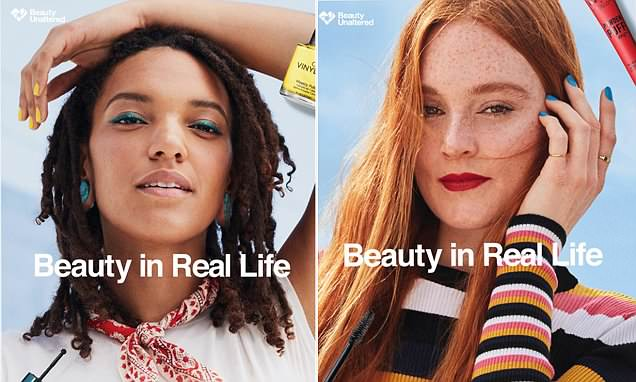
Overlapping Elements
Some brands blur the line between high fashion and commercial photography, combining elements of both to create unique campaigns. Skims, for example, has gained attention for its inclusive advertising, featuring models of all body types, ages, and backgrounds. While the brand primarily sells everyday shapewear and loungewear, its campaigns adopt a high-fashion edge through minimalist styling, sleek monochrome aesthetics, elaborate set design, and striking compositions. By blending commercial accessibility with high-fashion sophistication, Skims positions itself as both an aspirational and relatable brand.
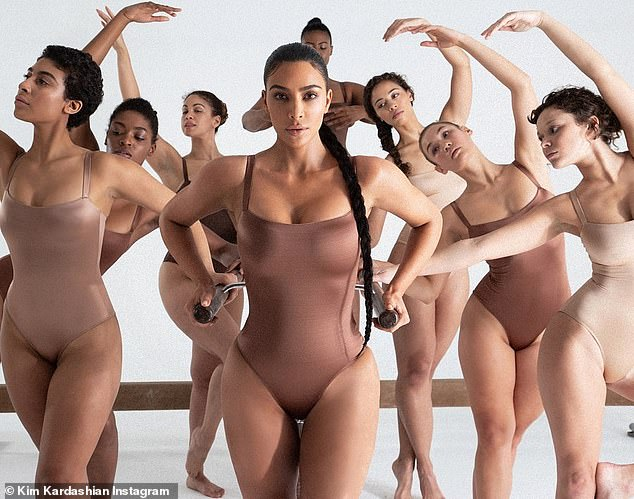
Zara, on the other hand, has embraced an unconventional approach to styling and posing in its fashion campaigns. Rather than the traditional clean-cut commercial look, Zara’s imagery often features models in offbeat, abstract poses, evoking an editorial feel. The use of dramatic angles, asymmetrical compositions, and a slightly surreal quality gives the brand a high-fashion sensibility while still catering to a mass-market audience. This balance allows Zara to stand out in the fast-fashion industry while maintaining a broad appeal
(Zara is mocked for online catalogue with models in bizarre poses that make it impossible to tell what the clothes look like - including one wearing a coat BACKWARDS, 2018).
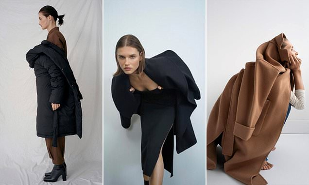
Industry Opportunities
High Fashion Careers
High fashion photography requires a strong artistic vision and extensive networking with designers, editors, and art directors. Success in this field is often defined by editorial spreads, runway campaigns, and gallery exhibitions. Recognition from major fashion houses or publications is crucial for building a career in this space. This market is generally more narrow and difficult to excel in due to lower demand and exclusivity.
Commercial Careers
Commercial fashion photography offers a more stable income, as it involves working closely with advertising agencies, brands, and marketing teams. Many commercial photographers transition into videography, branding, or e-commerce work, providing consistent opportunities in the industry. While it may not always be as experimental as high fashion, it remains a critical part of fashion marketing and business strategy.
Conclusion
Both high fashion and commercial photography are essential to the fashion industry, serving different audiences and purposes. High fashion photography thrives on artistic expression, pushing boundaries, and crafting striking visuals that influence trends and culture. Commercial fashion photography, in contrast, aims to be accessible and market-driven, showcasing products in a way that appeals to a broad consumer base. While the two styles differ, they often overlap in modern marketing as brands seek to balance aspirational artistry with commercial viability.